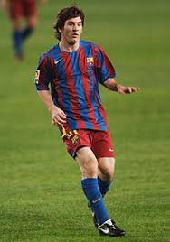

LOS 3 MEJORES FUTBOLISTAS SEGUN MI OPONION
|  | MESSI ES PARA MI EL MEJOR JUGADOR DEL MUNDO TENIENDO 10 Ligas, 8 Supercopas de España, 7 Copas del Rey, 4 Champions League, 3 Mundiales de Clubes, 3 Supercopas de Europa, 2 Ligue 1, 1 Mundial, 1 Supercopa de Francia, 1 Copa América, 1 Finalissima, 1 Mundial Sub-20, 1 Medalla de Oro en los Juegos Olímpicos. Y DEJANDO A UN LADO LOS TITULOS QUE SON MUY IMPORTANTES POR SUPUESTO, MI AGRADO POR MESSI ES POR QUE DESDE PEQUEÑO MI HERMANO VEIA PARTIDOS DEL FURBOL CLUB BRACELONA Y TAMBIEN VEIA CLIPS DE SUS JUGADORES, AHI FUE CUANDO YO ME ASOMBRE CON LA HABILIDAD DEL JUGADOR Y COMO TAN JOVEN ESTABA SIENDO TAN RECONOCIDO, Y EVIDENTENTE QUE APENAS HACE 2 AÑOS CASI MESSI LOGRO GANAR UNO DE LOS TITULOS MAS GRANDES EN EL MUNDO DE ESTE DE ESTE DEPORTE QUE FUE LA COPA DEL MUNDO POR ESO PARA MI ESTE ES EL NUMERO 1 |
| Neymar puede considerarse uno de los mejores jugadores del mundo por varias razones que respaldan su posición como el segundo mejor jugador. A continuación, te presento un argumento que destaca las cualidades y logros de Neymar:
1. *Talento y habilidad excepcionales*: Neymar es conocido por su talento excepcional, su habilidad técnica, su velocidad y su capacidad para desequilibrar en el campo. Su destreza en el regate, su visión de juego y su capacidad goleadora lo sitúan entre los mejores jugadores del mundo.
2. *Impacto en los partidos y estadísticas sobresalientes
3. *Experiencia y éxito en clubes de élite
4. *Reconocimiento y premios individuales
En resumen, Neymar se destaca por su talento, habilidad, impacto en los partidos, éxito en clubes de élite, reconocimientos individuales y contribución al éxito de sus equipos, lo que lo posiciona como el segundo mejor jugador del mundo en la actualidad. Su influencia en el juego, su capacidad para marcar la diferencia y su constante evolución como futbolista lo convierten en una figura destacada en el mundo del fútbol. |
 | CRISTIANO RONALDO.-1. Trayectoria y consistencia, 2. *Capacidad goleadora*: Cristiano Ronaldo es conocido por su capacidad goleadora sobresaliente. Ha sido uno de los máximos goleadores en las ligas en las que ha competido y ha batido numerosos récords goleadores a lo largo de su carrera, lo que demuestra su habilidad para marcar goles de manera regular y efectiva.
3. Su liderazgo y mentalidad es sorprende una de las cosas por las que mas se respeta a CR7.
4. Versatilidad y adaptabilidad.
En resumen, la trayectoria, consistencia, capacidad goleadora, liderazgo, mentalidad ganadora, versatilidad, adaptabilidad, palmarés y reconocimientos de Cristiano Ronaldo lo posicionan como el tercer mejor jugador del mundo en la actualidad. Su impacto en el juego, su influencia en el rendimiento de su equipo y su legado en el fútbol lo convierten en una figura destacada en el deporte a nivel mundial. |